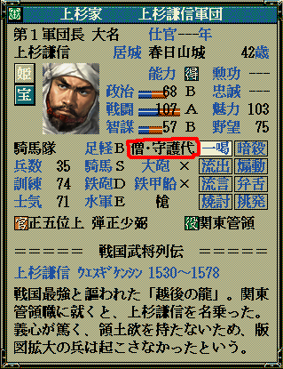
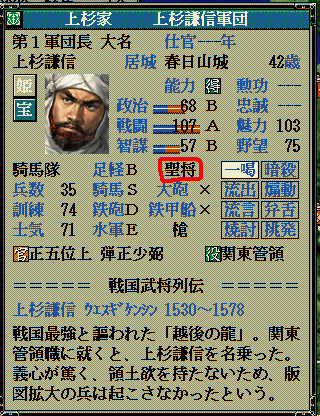

string カスタム::On_職業名表示直前(int 武将番号) {
return "";
}

string カスタム::On_職業名表示直前(int 武将番号) {
int iBushouID = 武将番号-1; // 武将番号→武将番号【配列用】に
if ( 0 <= iBushouID && iBushouID < 最大数::武将情報::配列数 ) {
if ( p武将戸籍情報[iBushouID].顔番号 == 顔番号::長尾景虎 ) { // 上杉謙信の顔＆列伝番号
if ( Get_戦闘値(iBushouID) >= 90 ) { // 戦闘値(家宝含)が180以上
return "軍神";
} else {
return "聖将";
}
}
}
// 変更しない場合""
return "";
}
